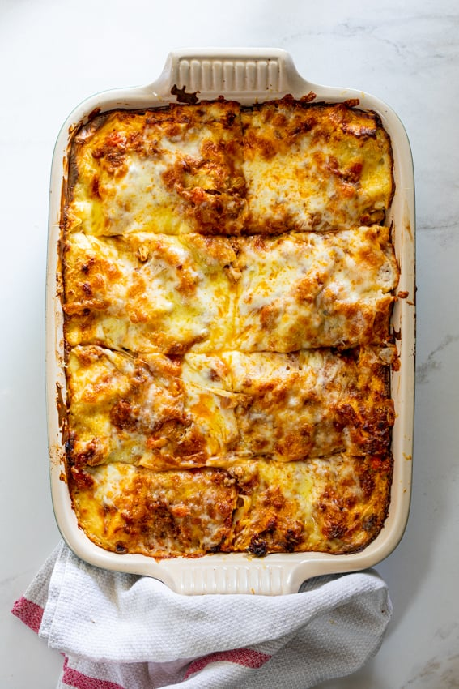

Lasagna
Home

Description
This recipe by Alida Ryder is a home made classic Italian lasagna. The lasagna comes with a home made Bechamel sauce, Bolognese, and cheese. It is great with a salad like Caprese or Caesar and garlic bread on the side.
Ingredients
- Lasagna sheets
- Ground beef
- Ground pork
- Onion
- Fresh garlic cloves
- Carrots
- Celery
- Herbs
- Beef stock
- Tomotoes
- Sugar
- Salt
- Black pepper
- Bechamel saush
- Parmesan cheese
- Mozzarella cheese
Steps
- Make the bolognese sauce
- Make bechamel sauce
- Assemble the lasagna
- Bake
- Allow it to rest